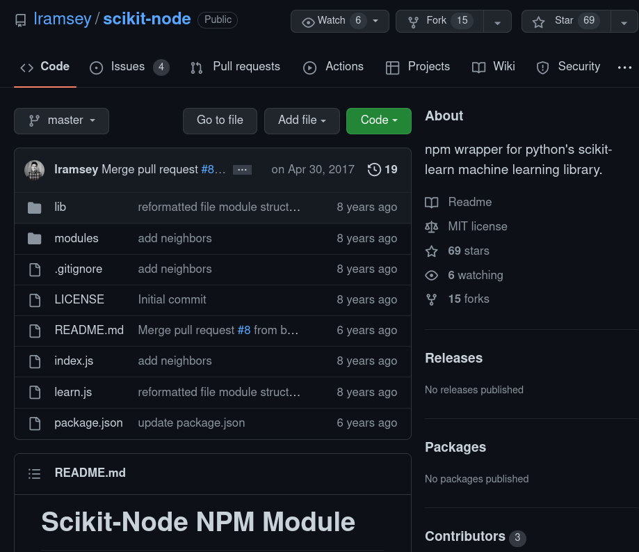
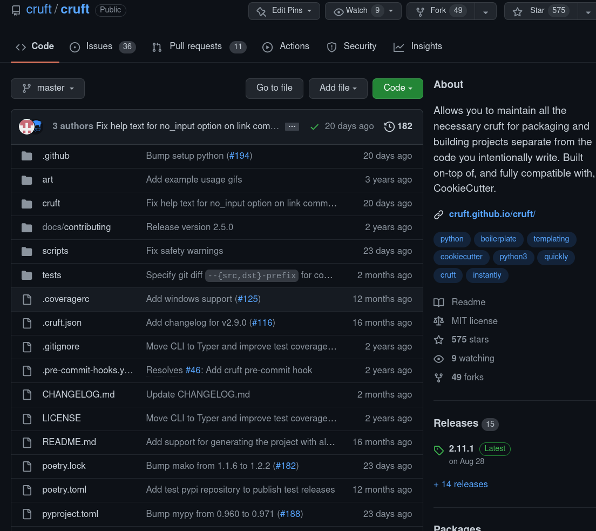
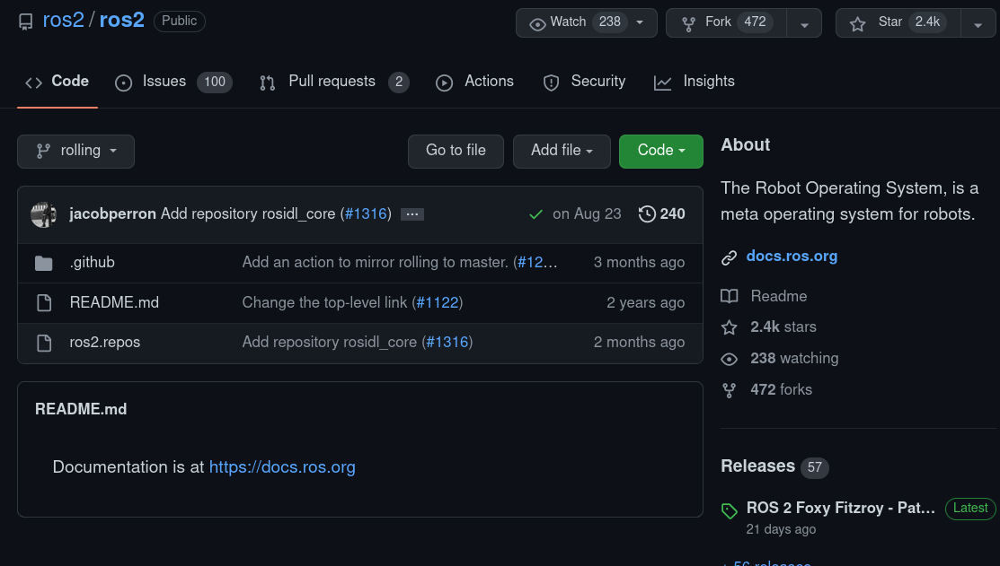
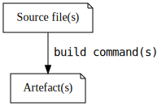
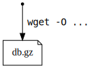
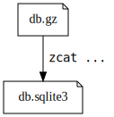
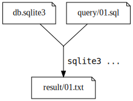
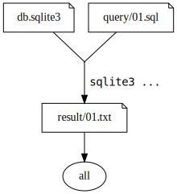
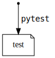

Makefiles
Build automation and documentation
Jb Doyon - https://jiby.tech/
Press S for speaker notes
Press SPACE for next page (arrows are wonky)
Let’s play
How do you build that?

Another one
How do you build that?

Another one²
How do you build that?

The issue
My job makes me jump between many code repos
How do I start building the code?
- Java:
gradle?mvn? - Python:
./thescript.py?reqs.txt? - What about the docs? tests? formatter? docker?
File transformations
“Building” = transforming some files into other files

My dream
A single place to read about most common commands
To remind me how, and to avoid typing boring magic
With Makefiles
make # Build & test & format & [...] = "do what I mean"
# Specific task combo make install test
# Real specific, but easily forgettable command: make docker-login # docker login to the AWS ECR
DOCKER_IMAGE=my-lovely-project .PHONY: all all: install lint docs test build .PHONY: install install: poetry install .PHONY: lint lint: # Use all linters on all files (not just staged for commit) pre-commit run --all --all-files .PHONY: test test: poetry run pytest .PHONY: docs docs: openapi-spec.json cd docs && make html .PHONY: docs-serve docs-serve: cd docs/build/html && python3 -m http.server .PHONY: docker-build docker-build: docker build -t ${DOCKER_IMAGE} .
By
using Makefiles in your repos
you
document and automate common “build” tasks
Specifically
- Listing build commands = teaching (new lang…)
- Shorter commands = automation
- Command composition across languages/tools
But, Jb…
Isn’t Makefiles for compiling C?
Well, yes. But nevermind that!
It was built for compiling C, but works on any cmd.
I’m talking about a restricted subset of Makefiles
Why not…
Why not $LANGUAGE’s tool?
npm run, poetry, cargo, etc
- I (probably) don’t know your language!
- Everyone has
make: it’sbuild-essential! - Makefiles is more powerful (partial rebuild)
Why not shell scripts?
- I can explain 90% of Makefiles in <10mins
- But I can’t trust anybody with shell scripts
shdoesn’t compose complex cmds
Makefile basics
Using an SQL course as example
Creating a file from scratch
# Download a compressed SQLite database dump db.gz: wget -O db.gz \ http://15445.courses.cs.cmu.edu/fall2017/files/md_courts.dump.gz

- “To create
database.gz, usewget” <TAB>before wget- Like any shell,
\allows multiline
Run this
make # Run the default (first) target # Alternatively, explicit the file to create make db.gz
- Downloads the DB dump (500MB) the first time
- Second invocation NOOP: file already exists!
Dependency
Extracts db.gz into db.sqlite3
db.sqlite3: db.gz
zcat db.gz | sqlite3 db.sqlite3

- Doesn’t redownload
db.gz: file exists - If
db.gzmore recent thandb.sqlite3: rerun
Complex dependency
results/01.txt: query/01.sql db.sqlite3
sqlite3 db.sqlite3 <query/01.sql >results/01.txt

Aliases
Computing query results via:
make results/01.txt
That’s long: shorter?
# Top of the Makefile: first target = default all: results/01.txt
New target all “needing” results/01.txt.
make # or, explicitly make all

- Note
allis not a real file! - Called a “phony” target
Wait I need sqlite!
dependencies:
sudo apt-get install sqlite
dependencies not a file: “Phony target”
PHONY targets
test: # Risky! pytest

- Works fine, until a file/folder
testis created - Then “Nothing to be done for ‘test’”
- We didn’t mark test as Phony, it looks for file
Solution: mark file as “phony”
.PHONY: test # "test" isn't a real file, rebuild always test: pytest
Remember: “if it’s not a real file, it’s .PHONY!”
Variables
Shorten URL
DB_URL=http://15445.courses.cs.cmu.edu/fall2017/files/md_courts.dump.gz db.gz: wget -O db.gz "${DB_URL}"
Variable override
APP_VERSION="v1.2.3" .PHONY: docker-build-release docker-build-release: docker build -t "my-lovely-app:${APP_VERSION}" .
Run via:
make docker-build-release # Builds v1.2.3 # Override variable just this time: make docker-build-release APP_VERSION=experimental # equivalent to: make APP_VERSION=experimental docker-build-release
Separate shells
Every line is run in different shell
bad: export VERSION=1.2.3 wget http://example.com/${VERSION} # "No such variable: 'VERSION'"
Recap
File graph
Links files (nodes) to build commands (edges)
Directed Acyclic Graph (DAG)
Partial rebuild
- Checks file exists, rebuild via command if missing
- Using file change timestamp (no hash database!)
- Phony targets = always rebuild those
Composable
- Run command sequence
- Override variables
- Much more I haven’t shown
Repo automation
(Rant begins)
Opinion
Every repo task SHOULD be a Makefile target
Python example
.PHONY: all all: install lint docs test build
.PHONY: install install: poetry install .PHONY: lint lint: # Use all linters on all files (not just staged for commit) pre-commit run --all --all-files .PHONY: test test: poetry run pytest .PHONY: docs docs: openapi-spec.json cd docs && make html .PHONY: docs-serve docs-serve: cd docs/build/html && python3 -m http.server
By
using Makefiles in your repos
you
document and automate common “build” tasks
How do I start?
Start simple
- Pick the command you run most often
- Add it to makefile as Phony target
- Start over: second-most used command?
And then?
Iterate towards infrequent commands
- Once common tasks are listed
- Document one-off commands, seldom needed
- Cache-busting,
docker system prune…
Avoid complexity
- Remember, the objective is cheap automation:
- Replace long cmds in README with
make init - Aim to replace 90% of all repo activity
If you ever say “I need to debug the Makefile”: too far
README-worthy
Once most commands are listed
It’s clean enough to exhibit in your README
Sample README section
For ease of development, a `Makefile` is provided, use it like this: make # equivalent to "make all" = install lint docs test build # run only specific tasks: make install make lint make test # Combine tasks: make install test
Note the abstraction: could be Java, Rust, Python…
By
using Makefiles in your repos
you
document and automate common “build” tasks
Questions?
Backup slides
RTFM
See GNU Make online docs, or offline:
sudo apt-get install make-doc info make # Much richer pages than "man make" (*giggles*)
Make help
Classic: show list of commands
help: ## display this help message grep '^[a-zA-Z]' $(MAKEFILE_LIST) | \ sort | \ awk -F ':.*?## ' 'NF==2 {printf " %-26s%s\n", $$1, $$2}'
Many variants exist, cargo-culted.
Disregard exit code
Prefix command with - to not fail on nonzero code:
results/failing_query.txt: db.gz -sqlite3 db.gz "An incorrect SQL query"
Wildcards
Match all files, set to a variable
all_queries = $(wildcard query/*.sql)
Shell commands
BRANCH=$(shell echo "${BUILDKITE_BRANCH}" | sed 's;/;_;g')
Makefile Rules
Generic rules, regardless of input:
results/%.txt: query/%.sql db.sqlite3 sqlite3 db.sqlite3 < $< > $@
Any value that fits % makes rule work:
make results/01.txt # % now set to 01 make results/blah.txt # % now set to blah, assumes query/blah.txt
Defining functions
define generate_file
sed 's/{NAME}/$(1)/' greetings.tmpl >$(2).txt
endef
all:
$(call generate_file,John Doe,101)
$(call generate_file,Peter Pan,102)
Sentinel files
Avoid phonies via real file dependency:
Create “sentinel files” manually
build/docker_image: docker build -t myimagename . docker images -q myimagename > build/docker_image test.sentinel: pytest && touch test.sentinel
- Not phony: depend on real file
- Timestamp of file determines needed to rerun
Parallelize
# Solve the graph with 8 parallel processes make -j 8
Dry-run/debug mode
Use -n flag for dry-run (debug)
make -n
zcat db.gz | sqlite3 db.sqlite3 sqlite3 db.sqlite3 <query/01.sql >results/01.txt
Graph a Makefile
makefile2dot python package, for GraphViz (dot)
pipx install makefile2dot makefile2dot | dot -Tpng > makefile.png

One shell
Run all commands into one shell
.ONESHELL: # Just declaring this is enough # All further commands are run in one persisting shell invocation good: export VERSION=1.2.3 wget http://example.com/${VERSION}
Polyglot Makefiles
Don’t shell out: use python!
.ONESHELL: python: SHELL := python3 python: greeting = "hello" print(f"{greeting}, python!")
Or docker run:
IMG=ubuntu CMD=/bin/bash PWD=$(shell pwd) WRK=workdir .SHELLFLAGS = run -v ${PWD}:/${WRK} --rm --workdir /${WRK} -e ${CMD} ${IMG} -c SHELL := docker docker: echo "hello, $$(uname -a)!"
See more on Polyglot Makefiles.
Other Makefile talks
More opinions about Makefiles
EOF
Read more rants, and this presentation, on https://jiby.tech